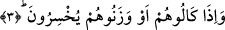

3. Onlara vermek için ölçüp tarttıklarında ise noksan yapan hilekârlara yazıklar
olsun!
Bu âyette harf-i cerler hazfedilmiş ve fiiller harf-i cer yardımıyla değil de doğrudan
mef’ûle bağlanmıştır. Nitekim Tacu’l-Mas’da ifâde olunduğuna göre fiilin iki çeşit
kullanımı vardır: Aslında fiilin önündeki lam harf-i cerri vardı. Sonra bu harf-i cer
hazfedilmiş ve fiil mef’ûlüne direk olarak bağlanmıştır. Nitekim bu âyet-i kerimedeki
kullanım da bunun bir örneğidir.
Âyette yer alan “hüm” zamiri mef’ûl olarak mahallen mansubtur. Yoksa fiilin fâilini
te’kid ediyor değildir. Çünkü cemi vâvına mef’ûl olan zamir bitiştiğinde vavdan sonra
elif yazılmaz. Nitekim âyet-i kerime de aynı durum sözkonusudur. Çünkü orada bu
fiilden sonra elif yazılmamıştır. Fiilin sonunda fâili te’kid etmek için merfû zamir
gelirse o zaman cemi vavından sonra elif harfi yazılır. Zira te’kid eden kelime daha
öncenin bir parçası gibi değildir. Oysa mef’ul, anlam itibariyle daha öncenin bir
parçasıdır.
Eğer “Mushaf hattı kàide dışıdır” denilecek olursa, ben de cevap olarak derim ki:
Temel kural bu gibi hususlarda Mushaf’ta elifin yazılacağı şeklindedir.
Allah bu âyet-i kerimede onların ölçerek veya tartarak mal verdiklerinde bunu
eksilttiklerini; ölçek ve tartı aslında eşitliği sağlamak için icad edildiği halde insanların
haklarını eksik verdiklerini vurgular.
Burada bir husus dikkat çekmektedir. İnsanlara bir şey satarken ölçü ve terazi
zikrediliyor. Onlardan bir şey satın alınırken sâdece ölçekten bahsediliyor. Herhalde
insanların haklarının eksiltildiği vurgulanırken ölçekten ve tartı aletinden bahsedilmesi,
hakkın tam olarak alınması durumunda sâdece ölçekten söz edilmesi onların tartarak
birşey satın alırken ölçekte oynadıkları gibi terazide hileye kaçamadıklarından dolayı
olsa gerektir. Nitekim Keşşaf’ta bu şekilde bir açıklama yer almaktadır. Âyetin
ifâdelerine yakından baktığımızda eksiltenlerin sanki ölçekle ve tartıyla alınıp satılan
şeyleri tartmaksızın sâdece ölçekle satın aldıklarını görüyoruz. Çünkü onlar ölçek
kullanarak satın aldıkları nesneyi tam alıp hile ile çalabiliyorlar. Zira ölçeği sallayarak
ve bir takım hilelere başvurarak adamakıllı doldurma imkanını bulabiliyorlar. Buna
karşılık birisine mal satacaklarında hem ölçekte ve hem de terazide eksik ölçüp tartmayı
becerebildiklerinden hem ölçerek hem de tartarak satıyorlardı.
Bu gerçeği yukarda geçen hadis-i şerifte sâdece “keyl/ölçek” ifâdesiyle yetinilmesi ve
gerek alırken, gerek satarken ölçülerek alınıp satılanla, tartılarak alınıp satılan mallara
temas edilmemesi de desteklemektedir. Çünkü ifâdenin sevkediliş sebebi, onların
alırken ve verirken kötü muamelelerini beyân etmektir. Yoksa alınan ve verilen şeylerin
ne olduğu üzerinde durulmak değildir.
Ebû Osman (rh.) diyor ki: Benim nazarımda bu âyetin ifâde ettiği gerçek mânâ şudur:
Her kim halkın gördüğü yerde ibâdetini güzel yaptığı halde tenhada aynı ibâdeti düzgün